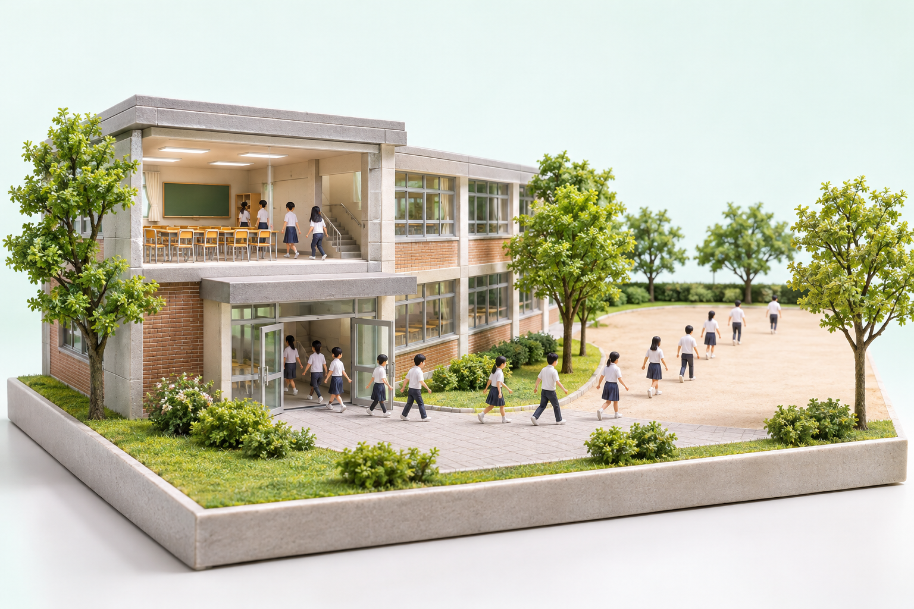
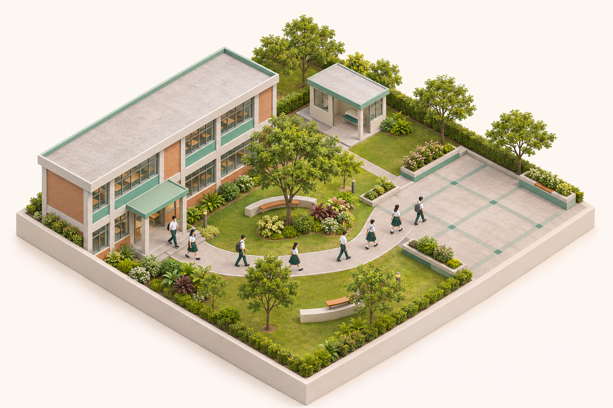

보충 01 / PPT 29장
효과의 역할을 구분함
- 장면과 시점을 구분함
- 글자와 시간 표현을 구분함
- 설명 목적에 맞춰 결합함
디오라마상황등각 시점배치3D 인포그래픽관계타이포그래피강조모션그래픽순서단면과 분해내부
프롬프트 입력 예시
학교 안전 수업에 맞는 시각 효과를 비교해줘. 장면, 시점, 정보 구조, 글자, 시간으로 구분해줘. 효과별 목적과 주의점을 한 줄씩 작성해줘.
보충 02 / PPT 30장
디오라마로 상황을 보여줌
- 작은 입체 장면을 구성함
- 재질과 조명으로 현실감을 줌
- 상황과 맥락 설명에 활용함

프롬프트 입력 예시
학교 대피 상황을 미니어처 디오라마로 그려줘. 낮은 사선 시점과 실제 재질, 부드러운 조명을 써줘. 교육용 가상 장면으로 만들고 글자는 제외해줘.
보충 03 / PPT 31장
아이소메트릭으로 배치를 읽음
- 등각 시점으로 배치를 표현함
- 시설 사이의 관계를 보여줌
- 실측 도면과 구분해 활용함

프롬프트 입력 예시
학교와 집결 공간을 등각 시점으로 그려줘. 교실에서 운동장까지의 연결 관계를 보여줘. 실사형 미니어처로 만들고 글자는 제외해줘.
보충 04 / PPT 32장
3D 인포그래픽으로 관계를 설명함
- 등각 미니어처를 실사형으로 그림
- 라벨과 화살표를 따로 편집함
- 공간과 절차를 연결해 설명함
교실→이동→집결
프롬프트 입력 예시
학교 대피 절차를 3D 인포그래픽으로 그려줘. 등각 미니어처 장면을 실사형 3D 그림으로 표현해줘. 교실, 이동, 집결 라벨은 PPT 객체로 추가해줘.
보충 05 / PPT 33장
타이포그래피로 핵심을 강조함
- 글자의 크기와 굵기를 조절함
- 대비와 여백으로 위계를 만듦
- 핵심 단어를 짧게 강조함
입력생성검토
프롬프트 입력 예시
입력, 생성, 검토를 타이포그래피로 구성해줘. 검토를 가장 크고 굵게 배치해줘. 밝은 배경에 편집 가능한 글자로 만들어줘.
보충 06 / PPT 34장
모션그래픽으로 순서를 보여줌
- 도형과 글자에 움직임을 줌
- 등장 순서로 흐름을 전달함
- 핵심을 가리는 효과는 줄임
프롬프트 입력 예시
입력에서 검토까지 8초 모션그래픽을 만들어줘. 카드는 차례로 등장하고 연결선은 이동하게 해줘. 16:9 MP4로 만들고 번쩍임과 음악은 제외해줘.
보충 07 / PPT 35장
단면과 분해로 내부를 드러냄
- 단면으로 숨은 구조를 드러냄
- 분해도로 부품 관계를 보여줌
- 모식도와 실제 설계를 구분함
지붕교실기초
프롬프트 입력 예시
학교 건물의 지붕, 교실, 기초를 분리해줘. 간격을 두고 수직으로 정렬해 관계를 보여줘. 수치 없는 교육용 모식도로 편집 가능하게 만들어줘.
보충 08 / PPT 36장
설명 목적에 맞춰 효과를 선택함
- 설명할 관계를 먼저 정함
- 필요한 효과만 선택해 결합함
- 생성 결과의 오류를 검토함
디오라마상황등각 시점배치3D 인포그래픽관계타이포그래피강조모션그래픽순서단면과 분해내부
프롬프트 입력 예시
고교생에게 [주제]를 설명할 시각 자료를 만들어줘. [목적]에 맞는 효과와 선택 이유를 먼저 제시해줘. 밝은 톤으로 만들고 사실과 가상 예시를 구분해줘.